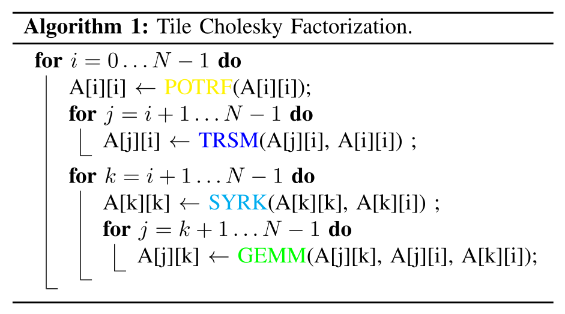
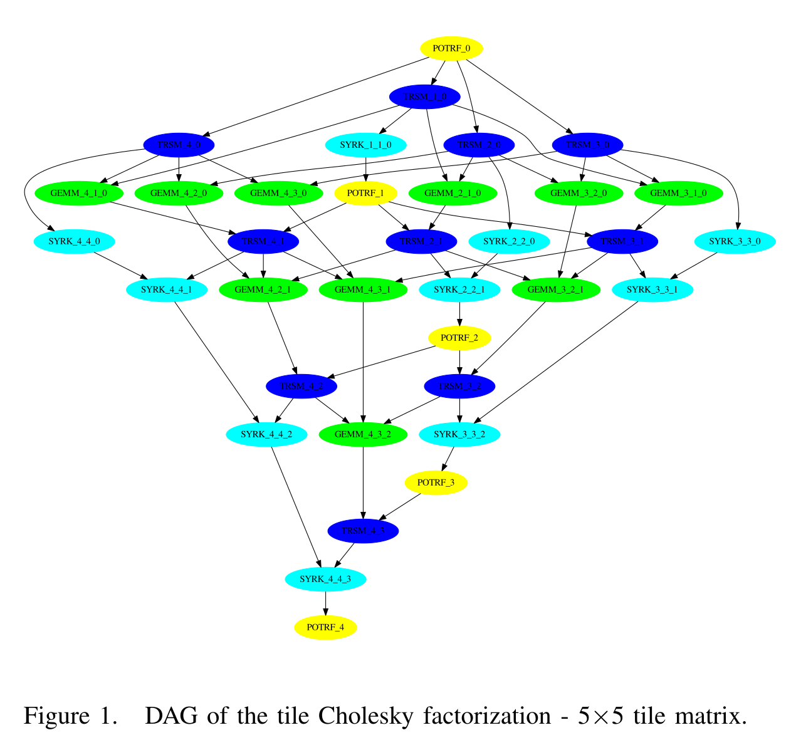

[44]:
def render_c(filename):
from IPython.display import Markdown
with open(filename) as f:
contents = f.read()
return Markdown("```c\n" + contents + "```\n")
20260925 OpenMP tasks¶
Up to now, we’ve been expressing parallelism as iterations in a loop or as pure SPMD.
What if we want to do more abstract breakdowns of work?
What if I don’t know how much work is going to be done ahead of time?
p = listhead;
while (p) {
process(p);
p = next(p);
}
How would we parallelize this loop? (execute
process(p)on different threads)
Every thread traverses the linked list
Each thread executes
processround-robin
p = listhead;
#pragma omp parallel firstprivate(p)
{
int i = 0;
int thread_num = omp_get_thread_num();
int num_threads = omp_get_num_threads();
while (p != NULL) {
if(i % num_threads == thread_num)
processwork(p);
p = p->next;
++i;
}
}
Memory contention issues with every thread having to traverse the list
What if
processwork()takes variable time?How would we attempt to load balance the work between threads?
What if there’s other work we may want to do?
This is ugly, inflexible, and annoying to do.
Enter tasks!
Tasks work similarly to dynamic scheduling for #pragma omp parallel for
We put “tasks” (units of work) on a stack (instead of chunks of loop iterations)
Each thread pops off a task
When a thread is done with a task, it asks for another one
Anatomy of OpenMP Task Code¶
#pragma omp parallel // Create team of threads to execute tasks
{
#pragma omp single // Only a single thread should perform the task creation
{
// Create tasks executed by the team of threads
#pragma omp task
task_a();
#pragma omp task
task_b();
#pragma omp task
task_c();
} // omp single block has an implied `barrier` to wait for all tasks to be completed
}
Only want a single thread to create the tasks, so wrap task-creation code with
#pragma omp single#pragma omp singlehas an implied barrier at the endThis ensures all tasks are completed before moving on
Tasks can be executed in any order*
There are ways to enforce ordering of tasks, discussed below
Define tasks with #pragma omp task, which applies to the next code block (or line):
#pragma omp task
this_function_runs_as_task();
#pragma omp task
x = 5 + 2; // This line runs as a task
#pragma omp task
{
this_runs_in_a_task();
this_one_too();
y = 9 + 5; // And this line too
}
Tasks can be created within a loop as well:
for (int i = 0; i < 4; i++) {
#pragma omp task firstprivate(i)
task_function(i);
}
Create 4 tasks to run
task_function()firstprivate(i)ensures that each function call will be foriat the time of the task creation
Our linked list example:¶
#pragma omp parallel
#pragma omp single
{
p = listhead;
while (p) {
#pragma omp task firstprivate(p)
process(p);
p = next(p);
}
}
Child tasks¶
Tasks can spawn their own tasks, creating child tasks
#pragma omp taskwaitcan be used as a barrier to ensure that child tasks have all been executed before doing other work
[247]:
render_c("./omp_taskwait_example.c")
[247]:
#include <omp.h>
#include <stdio.h>
#include <unistd.h>
void bar(int i, int time, char task);
void foo(int i);
int main() {
#pragma omp parallel
#pragma omp single
{
for (int i = 0; i < 4; i++) {
// Create tasks with foo and their own custom `i` value
#pragma omp task firstprivate(i)
foo(i);
}
}
return 0;
}
void foo(int i) {
// Foo then creates two child tasks with different parameters
#pragma omp task shared(i)
bar(i, 1000, 'a');
#pragma omp task shared(i)
bar(i, 0, 'b');
#pragma omp taskwait // Wait until child bar tasks are done before proceeding
int id = omp_get_thread_num();
printf("task %d\tfinish\tid: %d\n", i, id);
}
void bar(int i, int time, char task) {
int id = omp_get_thread_num();
usleep(time); // Make some tasks take longer
printf("task %d.%c\tid: %d\n", i, task, id);
}
[261]:
!make CFLAGS=-fopenmp omp_taskwait_example
!OMP_NUM_THREADS=3 ./omp_taskwait_example
make: 'omp_taskwait_example' is up to date.
task 2.b id: 0
task 0.b id: 2
task 1.b id: 1
task 2.a id: 0
task 2 finish id: 0
task 3.b id: 0
task 0.a id: 2
task 0 finish id: 2
task 1.a id: 1
task 1 finish id: 1
task 3.a id: 0
task 3 finish id: 0
Computing the Fibonacci numbers with OpenMP¶
- Fibonacci numbers are defined by the recurrence :nbsphinx-math:`begin{align}
F_0 &= 0 \ F_1 &= 1 \ F_n &= F_{n-1} + F_{n-2}
end{align}`
[46]:
render_c('fib.c')
[46]:
#include <stdio.h>
#include <omp.h>
#include <stdlib.h>
long fib(long n) {
if (n < 2) return n;
return fib(n - 1) + fib(n - 2);
}
int main(int argc, char **argv) {
if (argc > 3 || argc < 1) {
fprintf(stderr, "Usage: %s N [p]\n", argv[0]);
return 1;
}
long N = atol(argv[1]);
long fibs[N];
double time = omp_get_wtime();
#pragma omp parallel for
for (long i=0; i<N; i++)
fibs[i] = fib(i+1);
if (argc > 3 && argv[2][0] == 'p') {
for (long i=0; i<N; i++)
printf("%2ld: %5ld\n", i+1, fibs[i]);
}
printf("Time taken: %g", omp_get_wtime() - time);
return 0;
}
[163]:
!make CFLAGS='-g -O2 -march=native -fopenmp -Wall' fib
!OMP_NUM_THREADS=1 ./fib 40
make: 'fib' is up to date.
Time taken: 0.374608
Time dominated by the last set of fibonacci numbers
Static scheduling with automatic chunk_size means last thread gets all of the most expensive Fibonacci numbers to compute
Use tasks¶
[204]:
render_c('fib2.c')
[204]:
#include <stdio.h>
#include <omp.h>
#include <stdlib.h>
long fib(long n) {
if (n < 2) return n;
long n1, n2;
#pragma omp task shared(n1)
n1 = fib(n - 1);
#pragma omp task shared(n2)
n2 = fib(n - 2);
#pragma omp taskwait
return n1 + n2;
}
int main(int argc, char **argv) {
if (argc > 3 || argc < 1) {
fprintf(stderr, "Usage: %s N [p]\n", argv[0]);
return 1;
}
long N = atol(argv[1]);
long fibs[N];
double time = omp_get_wtime();
#pragma omp parallel
#pragma omp single nowait
{
for (long i=0; i<N; i++)
fibs[i] = fib(i+1);
}
if (argc == 3 && argv[2][0] == 'p') {
for (long i=0; i<N; i++)
printf("%2ld: %5ld\n", i+1, fibs[i]);
}
printf("Time taken: %g\n", omp_get_wtime() - time);
return 0;
}
[127]:
!make CFLAGS='-g -O2 -march=native -fopenmp -Wall' fib2
make: 'fib2' is up to date.
[138]:
!OMP_NUM_THREADS=2 ./fib2 30
Time taken: 1.6034
It’s expensive to create tasks when
nis small, even with only one thread.Looking at perf record data:
Overhead Command Shared Object Symbol 64.09% fib3 libgomp.so.1.0.0 [.] 0x0000000000025e50 16.44% fib3 libgomp.so.1.0.0 [.] 0x0000000000025c70 11.70% fib3 fib3 [.] fib
We’re spending only 11% of the time actually doing computation and creating tasks
Other 89% is simply overhead handling the distribution and synchronization of tasks
How can we cut down on that overhead?
Using cutoffs¶
At a small enough
n, we just do the work in serial
[68]:
render_c('fib3.c')
[68]:
#include <stdio.h>
#include <omp.h>
#include <stdlib.h>
long fib(long n) {
if (n < 2) return n;
if (n < 30)
return fib(n - 1) + fib(n - 2);
long n1, n2;
#pragma omp task shared(n1)
n1 = fib(n - 1);
#pragma omp task shared(n2)
n2 = fib(n - 2);
#pragma omp taskwait
return n1 + n2;
}
int main(int argc, char **argv) {
if (argc > 3 || argc < 1) {
fprintf(stderr, "Usage: %s N [p]\n", argv[0]);
return 1;
}
long N = atol(argv[1]);
long fibs[N];
double time = omp_get_wtime();
#pragma omp parallel
#pragma omp single nowait
{
for (long i=0; i<N; i++)
fibs[i] = fib(i+1);
}
for (long i=0; i<N; i++)
printf("%2ld: %5ld\n", i+1, fibs[i]);
if (argc == 3 && argv[2][0] == 'p') {
for (long i=0; i<N; i++)
printf("%2ld: %5ld\n", i+1, fibs[i]);
}
printf("Time taken: %g\n", omp_get_wtime() - time);
return 0;
}
[125]:
!make CFLAGS='-g -O2 -march=native -fopenmp -Wall' fib3
make: 'fib3' is up to date.
[209]:
!OMP_NUM_THREADS=5 ./fib3 40
Time taken: 0.368259
This is just slower than the naive
omp parallel forWhy might that be?
Previously,
fib()was a simple recursive function
long fib(long n) {
if (n < 2) return n;
return fib(n - 1) + fib(n - 2);
}
Compiler could make optimizations based on this very simple recursive structure
Rather than have to do literal function calls every time
Since the new
fib()is creating child tasks, compiler doesn’t make the recursion optimizations for the sequential part
Separate your thread-local code from your task creation code
This will make your code easier to read
Also make your compiler happier to perform optimizations
[83]:
render_c('fib4.c')
[83]:
#include <stdio.h>
#include <omp.h>
#include <stdlib.h>
long fib_seq(long n) {
if (n < 2) return n;
return fib_seq(n - 1) + fib_seq(n - 2);
}
long fib(long n) {
if (n < 30)
return fib_seq(n);
long n1, n2;
#pragma omp task shared(n1)
n1 = fib(n - 1);
#pragma omp task shared(n2)
n2 = fib(n - 2);
#pragma omp taskwait
return n1 + n2;
}
int main(int argc, char **argv) {
if (argc > 3 || argc < 1) {
fprintf(stderr, "Usage: %s N [p]\n", argv[0]);
return 1;
}
long N = atol(argv[1]);
long fibs[N];
double time = omp_get_wtime();
#pragma omp parallel
#pragma omp single nowait
{
for (long i=0; i<N; i++)
fibs[i] = fib(i+1);
}
if (argc == 3 && argv[2][0] == 'p') {
for (long i=0; i<N; i++)
printf("%2ld: %5ld\n", i+1, fibs[i]);
}
printf("Time taken: %g\n", omp_get_wtime() - time);
return 0;
}
[123]:
!make CFLAGS='-g -O2 -march=native -fopenmp -Wall' fib4
make: 'fib4' is up to date.
[223]:
!OMP_NUM_THREADS=6 ./fib4 40
Time taken: 0.139879
Alt: schedule(static,1)¶
However good a demonstration this is, it’s also pretty dumb
Really, should just have each thread work on it’s own Fibonacci number
Easiest way to do that is to simply use
omp parallel forand set the chunk size to 1
[94]:
render_c('fib5.c')
[94]:
#include <stdio.h>
#include <omp.h>
#include <stdlib.h>
long fib(long n) {
if (n < 2) return n;
return fib(n - 1) + fib(n - 2);
}
int main(int argc, char **argv) {
if (argc > 3 || argc < 1) {
fprintf(stderr, "Usage: %s N [p]\n", argv[0]);
return 1;
}
long N = atol(argv[1]);
long fibs[N];
double time = omp_get_wtime();
#pragma omp parallel for schedule(static,1)
for (long i=0; i<N; i++)
fibs[i] = fib(i+1);
if (argc == 3 && argv[2][0] == 'p') {
for (long i=0; i<N; i++)
printf("%2ld: %5ld\n", i+1, fibs[i]);
}
printf("Time taken: %g\n", omp_get_wtime() - time);
return 0;
}
[224]:
!make CFLAGS='-g -O2 -march=native -fopenmp -Wall' fib5
make: 'fib5' is up to date.
[238]:
!OMP_NUM_THREADS=4 ./fib5 40
Time taken: 0.187545
Better math¶
Never be afraid to step back and ask “wait, what are we really trying to do here?”
Why don’t we implement the basic Fibonacci algorithm we discussed in the first or second lecture?
e.g. ditch the recursion altogether
[113]:
render_c('fib6.c')
[113]:
#include <stdio.h>
#include <omp.h>
#include <stdlib.h>
int main(int argc, char **argv) {
if (argc > 3 || argc < 1) {
fprintf(stderr, "Usage: %s N [p]\n", argv[0]);
return 1;
}
long N = atol(argv[1]);
long fibs[N];
double time = omp_get_wtime();
fibs[0] = 1;
fibs[1] = 2;
for (long i=2; i<N; i++)
fibs[i] = fibs[i-1] + fibs[i-2];
if (argc == 3 && argv[2][0] == 'p') {
for (long i=0; i<N; i++)
printf("%2ld: %5ld\n", i+1, fibs[i]);
}
printf("Time taken: %g\n", omp_get_wtime() - time);
return 0;
}
[239]:
!make CFLAGS='-g -O2 -march=native -fopenmp -Wall' fib6
make: 'fib6' is up to date.
[240]:
!time ./fib6 100
Time taken: 1.89058e-07
./fib6 100 0.00s user 0.00s system 90% cpu 0.001 total
Task dependencies¶
Declare data dependencies between tasks using
depend()clauseCreates a dependency graph such that tasks of different kinds maybe created all
Can declare dependencies on subsets of arrays as well as single variables
depend(in: x)ordepend(in: x[1:M]), whereMis some variable in the code
depend clause |
Meaning |
|---|---|
|
This data is an input dependency to the task |
|
This data is an output dependency to the task |
|
This data is both an input and output dependency to the task |
Examples¶
[189]:
render_c('task_dep.4.c')
[189]:
#include <stdio.h>
#include <unistd.h>
int main() {
int x = 1;
#pragma omp parallel
#pragma omp single
{
#pragma omp task shared(x) depend(out: x)
{
usleep(1);
x = 2;
}
#pragma omp task shared(x) depend(in: x)
printf("x + 1 = %d. ", x+1);
#pragma omp task shared(x) depend(in: x)
printf("x + 2 = %d. ", x+2);
}
puts("");
return 0;
}
[196]:
!make CFLAGS=-fopenmp task_dep.4
!for i in {1..10}; do ./task_dep.4; done
make: 'task_dep.4' is up to date.
x + 1 = 3. x + 2 = 4.
x + 1 = 3. x + 2 = 4.
x + 1 = 3. x + 2 = 4.
x + 1 = 3. x + 2 = 4.
x + 1 = 3. x + 2 = 4.
x + 2 = 4. x + 1 = 3.
x + 1 = 3. x + 2 = 4.
x + 1 = 3. x + 2 = 4.
x + 2 = 4. x + 1 = 3.
x + 2 = 4. x + 1 = 3.
The “x+1” task and “x+2” task complete in any order
They have the correct result, as they wait on the first task to complete and update the value of
x
[5]:
render_c('task_dep.4inout.c')
[5]:
#include <stdio.h>
int main() {
int x = 1;
#pragma omp parallel
#pragma omp single
{
#pragma omp task shared(x) depend(out: x)
x = 2;
#pragma omp task shared(x) depend(inout: x)
printf("x + 1 = %d. ", x+1);
#pragma omp task shared(x) depend(in: x)
printf("x + 2 = %d. ", x+2);
}
puts("");
return 0;
}
[6]:
!make CFLAGS=-fopenmp -B task_dep.4inout
cc -fopenmp task_dep.4inout.c -o task_dep.4inout
[21]:
!for i in {1..10}; do ./task_dep.4inout; done
x + 1 = 3. x + 2 = 4.
x + 1 = 3. x + 2 = 4.
x + 1 = 3. x + 2 = 4.
x + 1 = 3. x + 2 = 4.
x + 1 = 3. x + 2 = 4.
x + 1 = 3. x + 2 = 4.
x + 1 = 3. x + 2 = 4.
x + 1 = 3. x + 2 = 4.
x + 1 = 3. x + 2 = 4.
x + 1 = 3. x + 2 = 4.
The “x+1” task always completes before the “x+2” task due to the
inoutdependency
To fork/join or to task?¶
When the work unit size and compute speed is predictable, we can partition work in advance and schedule with omp for to achieve load balance.
Satisfying both criteria is often hard:
Work size variability: Adaptive algorithms, adaptive physics, implicit constitutive models
Compute rate variability: AVX throttling, thermal throttling, network or file system contention, OS jitter
Fork/join and barriers are also high overhead, so we might want to express data dependencies more precisely.

For tasking to be efficient, it relies on overdecomposition, creating more work units than there are processing units.
For many numerical algorithms, there is some overhead to overdecomposition.
For example, in array processing, a halo/fringe/ghost/overlap region might need to be computed as part of each work patch, leading to time models along the lines of
\[t_{\text{tile}}(n) = t_{\text{latency}} + \frac{(n+2)^3}{R}\]where \(R\) is the processing rate.
In addition to the latency, the overhead fraction is
indicating that larger \(n\) should be more efficient.
However, if this overhead is acceptable and you still have load balancing challenges, tasking can be a solution. (Example this blog/talk.)
Computational depth and the critical path¶
Consider the block Cholesky factorization algorithm (applying to the lower-triangular matrix \(A\)).
Expressing essential data dependencies, this results in the following directed acyclic graph (DAG). No parallel algorithm can complete in less time than it takes for a sequential algorithm to perform each operation along the critical path (i.e., the minimum depth of this graph such that all arrows point downward).

Figures from Agullo et al (2016): Are Static Schedules so Bad? A Case Study on Cholesky Factorization, which is an interesting counterpoint to the common narrative pushing dynamic scheduling.
Question: what is the computational depth of summing an array?¶
double sum = 0;
for (int i=0; i<N; i++)
sum += array[i];
Given an arbitrarily large number \(P\) of processing units, what is the smallest computational depth to compute this mathematical result? (You’re free to use any associativity.)